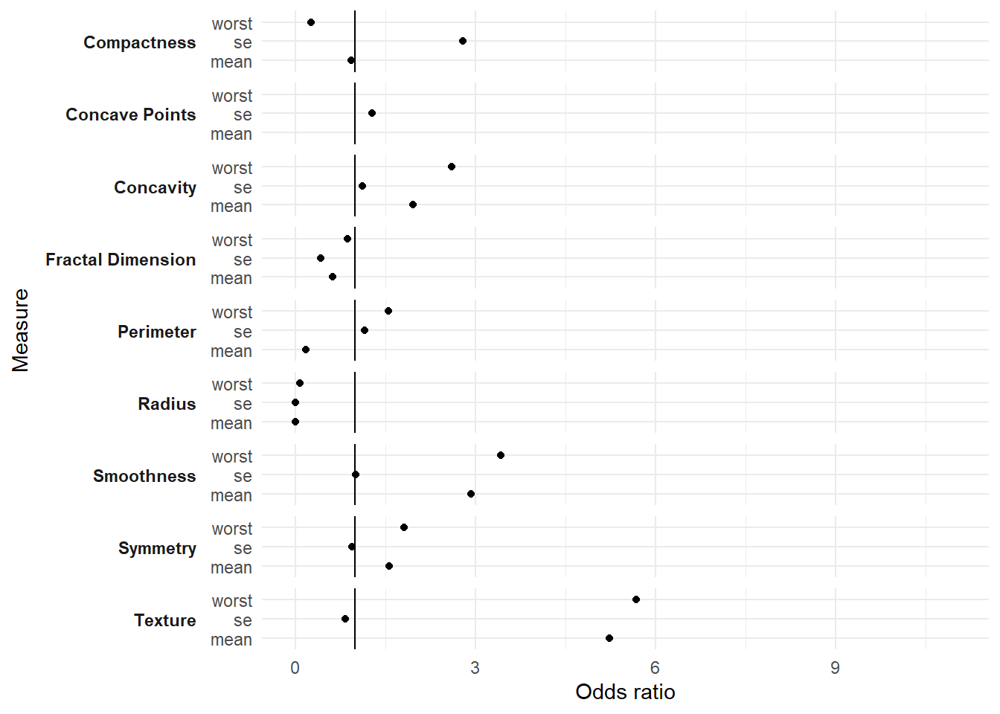
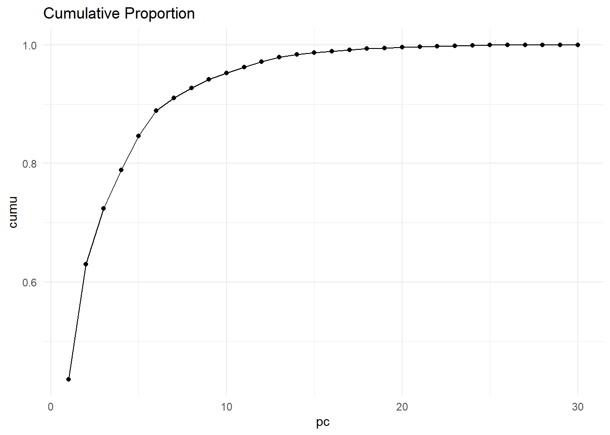
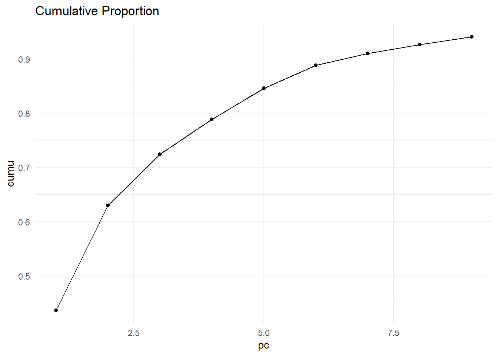
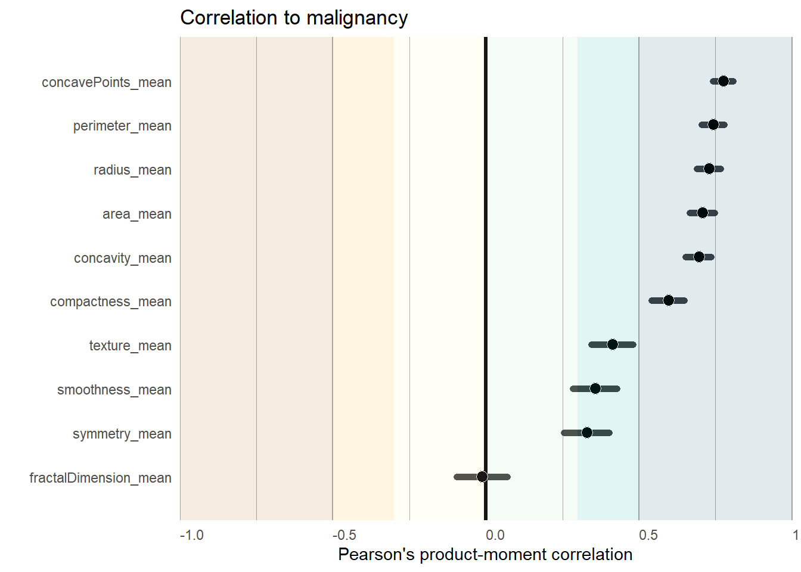

Code
library(tidyverse)
library(kableExtra)
library(pROC)
library(caret)Analyzes a dataset of features computed from a digitized image of a fine needle aspirate (FNA) of breast mass.
| Feature | Description |
|---|---|
radius |
mean of distances from center to points on the perimeter |
texture |
standard deviation of gray-scale values |
perimeter |
|
area |
|
smoothness |
local variation in radius lengths |
compactness |
perimeter^2 / area - 1.0 |
concavity |
severity of concave portions of the contour |
concave |
number of concave portions of the contour |
symmetry |
|
fractal dimension |
- “coastline approximation” - 1 |
Each feature has 3 variables: mean, standard error (se), worst (largest) resulting in 30 variables in total
Since perimeter seems to be a calculation for several other variables, remove for next model but the current iteration includes it.
library(tidyverse)
library(kableExtra)
library(pROC)
library(caret)| Package | Version |
|---|---|
| caret | 6.0-94 |
| lattice | 0.21-9 |
| pROC | 1.18.5 |
| kableExtra | 1.3.4 |
| lubridate | 1.9.3 |
| forcats | 1.0.0 |
| stringr | 1.5.1 |
| dplyr | 1.1.4 |
| purrr | 1.0.2 |
| readr | 2.1.4 |
| tidyr | 1.3.0 |
| tibble | 3.2.1 |
| ggplot2 | 3.4.4 |
| tidyverse | 2.0.0 |
Imports and cleans the dataset for easier manipulation
bc_import <- read.csv("PCA/breastcancerdata.csv") |>
#cleans all names for easy manipulation
janitor::clean_names() |>
#removes empty rows and columns
janitor::remove_empty() |>
#reformats an oddly names variable
rename_with(~ gsub("concave_points", "concavePoints", .x)) |>
#reformats an oddly names variable
rename_with(~ gsub("fractal_dimension", "fractalDimension", .x)) |>
#creates and factors an outcome variable
mutate(outcome = factor(ifelse(diagnosis == "M", 1, 0)))Start with running a simple logistic regression. Here we take only “mean” variables
Estimate throughout the analysis is the Odds Ratio unless otherwise noted
model1 <- bc_import |>
select(outcome, ends_with("mean")) %>%
glm(outcome ~ ., data = ., family = "binomial")
model1_cis <-confint.default(model1) |>
as.data.frame() |>
rownames_to_column("term") |>
janitor::clean_names() |>
filter(term != "(Intercept)")
names(model1_cis) <- c("term", "lci", "uci")
model1_tbl <- summary(model1) |>
pluck('coefficients') |>
as.data.frame() |>
rownames_to_column("term") |>
janitor::clean_names() |>
rename(p.value = pr_z) |>
filter(term != "(Intercept)") |>
arrange(-estimate) |>
mutate(signif = case_when(
p.value < 0.001 ~ "<0.001",
p.value < 0.01 ~ "<0.01",
p.value < 0.05 ~ "<0.05",
T ~ ""
),
) |>
full_join(model1_cis, by = "term")This results in the following model output. The odds ratio for smoothness_mean, concavePoints_mean, symmetry_mean are extremely large, suggesting an unstable model or variable. Perhaps those variables are highly correlated with the outcome (malignancy).
model1_tbl |>
mutate(across(c(estimate, lci, uci), ~ round(exp(.x),2))) |>
mutate(across(c(estimate, lci, uci), ~ ifelse(.x > 20, "extreme (>20)", as.character(.x)) )) |>
knitr::kable( ) |>
row_spec(which(model1_tbl$signif == "<0.05"), color = 'white', background = '#48cae4') |>
row_spec(which(model1_tbl$signif == "<0.01"), color = 'white', background = '#0096c7') |>
row_spec(which(model1_tbl$signif == "<0.001"), color = 'white', background = '#023e8a') | term | estimate | std_error | z_value | p.value | signif | lci | uci |
|---|---|---|---|---|---|---|---|
| smoothness_mean | extreme (>20) | 31.9549173 | 2.3918783 | 0.0167624 | <0.05 | extreme (>20) | extreme (>20) |
| concavePoints_mean | extreme (>20) | 28.5290991 | 2.3422316 | 0.0191688 | <0.05 | extreme (>20) | extreme (>20) |
| symmetry_mean | extreme (>20) | 10.6305856 | 1.5312649 | 0.1257039 | 0.01 | extreme (>20) | |
| concavity_mean | extreme (>20) | 8.1200343 | 1.0429389 | 0.2969766 | 0 | extreme (>20) | |
| texture_mean | 1.47 | 0.0645368 | 5.9614695 | 0.0000000 | <0.001 | 1.29 | 1.67 |
| area_mean | 1.04 | 0.0167396 | 2.3773681 | 0.0174367 | <0.05 | 1.01 | 1.08 |
| perimeter_mean | 0.93 | 0.5051648 | -0.1415586 | 0.8874287 | 0.35 | 2.51 | |
| compactness_mean | 0.23 | 20.3424949 | -0.0718900 | 0.9426894 | 0 | extreme (>20) | |
| radius_mean | 0.13 | 3.7158804 | -0.5514992 | 0.5812915 | 0 | extreme (>20) | |
| fractalDimension_mean | 0 | 85.5566574 | -0.7987342 | 0.4244446 | 0 | extreme (>20) |
As to not repeat code, I made a function to run the logistic regression by each measurement type
scale_data <- bc_import[,-c(1,2,33)] |>
mutate(across(everything(), ~scale(.x)))|>
cbind(outcome = bc_import$outcome) #%>%
# select(-starts_with(c("radius", "concavePoints")))
get_submodel <- function(type, scale = FALSE) {
if (scale) {
model_fx <- scale_data |>
select(outcome, ends_with(type)) %>%
glm(outcome ~ ., data = ., family = "binomial")
} else {
model_fx <- bc_import |>
select(outcome, ends_with(type)) %>%
# select(-starts_with(c("radius", "concavePoints"))) %>%
glm(outcome ~ ., data = ., family = "binomial")
}
modelfx_cis <- confint.default( model_fx) |>
as.data.frame() |>
rownames_to_column("term") |>
janitor::clean_names() |>
filter(term != "(Intercept)")
names(modelfx_cis) <- c("term", "lci", "uci")
modelfx_tbl <- summary(model_fx) |>
pluck('coefficients') |>
as.data.frame() |>
rownames_to_column("term") |>
janitor::clean_names() |>
rename(p.value = pr_z) |>
filter(term != "(Intercept)") |>
arrange(-estimate) |>
mutate(signif = case_when(
p.value < 0.001 ~ "<0.001",
p.value < 0.01 ~ "<0.01",
p.value < 0.05 ~ "<0.05",
T ~ ""
),
) |>
full_join(modelfx_cis, by = "term")
modelfx_kbl <- modelfx_tbl |>
mutate(across(c(estimate, lci, uci), ~ round(exp(.x),2))) |>
mutate(across(c(estimate, lci, uci), ~ ifelse(.x > 20, "extreme (>20)", as.character(.x)) )) |>
knitr::kable( ) |>
row_spec(which(modelfx_tbl$signif == "<0.05"), color = 'white', background = '#48cae4') |>
row_spec(which(modelfx_tbl$signif == "<0.01"), color = 'white', background = '#0096c7') |>
row_spec(which(modelfx_tbl$signif == "<0.001"), color = 'white', background = '#023e8a')
return(list("data" = modelfx_tbl,
"kabel" = modelfx_kbl,
"model" = model_fx))
}Going beyond the mean variables, this is logistic regression on se and worst variables
| term | estimate | std_error | z_value | p.value | signif | lci | uci |
|---|---|---|---|---|---|---|---|
| compactness_se | extreme (>20) | 28.6881072 | 1.9957318 | 0.0459631 | <0.05 | 2.79 | extreme (>20) |
| concavePoints_se | extreme (>20) | 64.1740842 | 0.6196717 | 0.5354740 | 0 | extreme (>20) | |
| smoothness_se | extreme (>20) | 98.6918300 | 0.0425526 | 0.9660582 | 0 | extreme (>20) | |
| concavity_se | extreme (>20) | 11.9515321 | 0.3024004 | 0.7623468 | 0 | extreme (>20) | |
| area_se | 1.48 | 0.0571013 | 6.8906204 | 0.0000000 | <0.001 | 1.33 | 1.66 |
| perimeter_se | 1.08 | 0.4762079 | 0.1577165 | 0.8746802 | 0.42 | 2.74 | |
| texture_se | 0.72 | 0.4230076 | -0.7892557 | 0.4299625 | 0.31 | 1.64 | |
| symmetry_se | 0 | 30.4575195 | -0.2220117 | 0.8243047 | 0 | extreme (>20) | |
| radius_se | 0 | 6.1378638 | -4.5991817 | 0.0000042 | <0.001 | 0 | 0 |
| fractalDimension_se | 0 | 149.2935576 | -2.1349435 | 0.0327656 | <0.05 | 0 | 0 |
| term | estimate | std_error | z_value | p.value | signif | lci | uci |
|---|---|---|---|---|---|---|---|
| smoothness_worst | extreme (>20) | 21.8794929 | 2.4654779 | 0.0136831 | <0.05 | extreme (>20) | extreme (>20) |
| concavePoints_worst | extreme (>20) | 16.1553403 | 2.3242271 | 0.0201133 | <0.05 | extreme (>20) | extreme (>20) |
| symmetry_worst | extreme (>20) | 5.8469426 | 1.6456927 | 0.0998270 | 0.16 | extreme (>20) | |
| concavity_worst | extreme (>20) | 3.3716060 | 1.3583589 | 0.1743498 | 0.13 | extreme (>20) | |
| texture_worst | 1.33 | 0.0600416 | 4.7050803 | 0.0000025 | <0.001 | 1.18 | 1.49 |
| area_worst | 1.02 | 0.0146452 | 1.2822481 | 0.1997556 | 0.99 | 1.05 | |
| perimeter_worst | 1.01 | 0.1284605 | 0.1011880 | 0.9194012 | 0.79 | 1.3 | |
| radius_worst | 0.59 | 1.5308645 | -0.3497579 | 0.7265204 | 0.03 | 11.76 | |
| fractalDimension_worst | 0 | 49.2904190 | -0.1597592 | 0.8730707 | 0 | extreme (>20) | |
| compactness_worst | 0 | 8.4471895 | -0.9846105 | 0.3248154 | 0 | extreme (>20) |
After investigating further, an issue with the above is that the scales for the variables are very different. For instance, fractalDimension values occurs within less than 1 unit difference while area_mean is within the thousand. Here I rerun the models but scale the numbers with the scale() function.
| term | estimate | std_error | z_value | p.value | signif | lci | uci |
|---|---|---|---|---|---|---|---|
| area_mean | extreme (>20) | 5.8909033 | 2.3773681 | 0.0174367 | <0.05 | 11.69 | extreme (>20) |
| concavePoints_mean | 13.37 | 1.1070102 | 2.3422316 | 0.0191688 | <0.05 | 1.53 | extreme (>20) |
| texture_mean | 5.23 | 0.2775752 | 5.9614695 | 0.0000000 | <0.001 | 3.04 | 9.01 |
| smoothness_mean | 2.93 | 0.4494181 | 2.3918783 | 0.0167624 | <0.05 | 1.21 | 7.07 |
| concavity_mean | 1.96 | 0.6473276 | 1.0429389 | 0.2969766 | 0.55 | 6.99 | |
| symmetry_mean | 1.56 | 0.2914299 | 1.5312649 | 0.1257039 | 0.88 | 2.77 | |
| compactness_mean | 0.93 | 1.0743433 | -0.0718900 | 0.9426894 | 0.11 | 7.6 | |
| fractalDimension_mean | 0.62 | 0.6040610 | -0.7987342 | 0.4244446 | 0.19 | 2.02 | |
| perimeter_mean | 0.18 | 12.2749905 | -0.1415586 | 0.8874287 | 0 | extreme (>20) | |
| radius_mean | 0 | 13.0949439 | -0.5514992 | 0.5812915 | 0 | extreme (>20) |
| term | estimate | std_error | z_value | p.value | signif | lci | uci |
|---|---|---|---|---|---|---|---|
| area_se | extreme (>20) | 2.5975937 | 6.8906204 | 0.0000000 | <0.001 | extreme (>20) | extreme (>20) |
| compactness_se | 2.79 | 0.5137518 | 1.9957318 | 0.0459631 | <0.05 | 1.02 | 7.63 |
| concavePoints_se | 1.28 | 0.3959724 | 0.6196717 | 0.5354740 | 0.59 | 2.78 | |
| perimeter_se | 1.16 | 0.9628232 | 0.1577165 | 0.8746802 | 0.18 | 7.68 | |
| concavity_se | 1.12 | 0.3607697 | 0.3024004 | 0.7623468 | 0.55 | 2.26 | |
| smoothness_se | 1.01 | 0.2963240 | 0.0425526 | 0.9660582 | 0.57 | 1.81 | |
| symmetry_se | 0.95 | 0.2517732 | -0.2220117 | 0.8243047 | 0.58 | 1.55 | |
| texture_se | 0.83 | 0.2333515 | -0.7892557 | 0.4299625 | 0.53 | 1.31 | |
| fractalDimension_se | 0.43 | 0.3950413 | -2.1349435 | 0.0327656 | <0.05 | 0.2 | 0.93 |
| radius_se | 0 | 1.7021078 | -4.5991817 | 0.0000042 | <0.001 | 0 | 0.01 |
| term | estimate | std_error | z_value | p.value | signif | lci | uci |
|---|---|---|---|---|---|---|---|
| area_worst | extreme (>20) | 8.3383263 | 1.2822481 | 0.1997556 | 0 | extreme (>20) | |
| concavePoints_worst | 11.8 | 1.0619283 | 2.3242271 | 0.0201133 | <0.05 | 1.47 | extreme (>20) |
| texture_worst | 5.68 | 0.3690314 | 4.7050803 | 0.0000025 | <0.001 | 2.75 | 11.7 |
| smoothness_worst | 3.43 | 0.4995620 | 2.4654779 | 0.0136831 | <0.05 | 1.29 | 9.12 |
| concavity_worst | 2.6 | 0.7033989 | 1.3583589 | 0.1743498 | 0.65 | 10.32 | |
| symmetry_worst | 1.81 | 0.3617355 | 1.6456927 | 0.0998270 | 0.89 | 3.69 | |
| perimeter_worst | 1.55 | 4.3166001 | 0.1011880 | 0.9194012 | 0 | extreme (>20) | |
| fractalDimension_worst | 0.87 | 0.8902474 | -0.1597592 | 0.8730707 | 0.15 | 4.97 | |
| compactness_worst | 0.27 | 1.3290511 | -0.9846105 | 0.3248154 | 0.02 | 3.66 | |
| radius_worst | 0.08 | 7.3990381 | -0.3497579 | 0.7265204 | 0 | extreme (>20) |
The scaled models provide a more somewhat useful baseline for moving forward. Here we chart the ORs from the models, comparing across the measurement types (mean, se, and worst). It excludes the extreme values (eg. area mean).
scale_ls <- lapply(paste0("scale_", c("mean", "se", "worst")), function(x) {
get(x) |>
pluck("data")|>
select(term, estimate, lci, uci)
})
plot_data1 <- bind_rows(scale_ls) |>
mutate(feature = str_to_title(sub("(?=[A-Z])"," ",gsub("_.*", "", term), perl =T)),
measure = gsub(".*_", "", term),
across(c(estimate, lci, uci), ~ round(exp(.x),2))) |>
filter(estimate < 20)
plot_data1 |>
ggplot(aes(x = estimate, y = term)) +
geom_point() +
facet_wrap(~ feature, scales = "free_y", ncol = 1,
strip.position = "left",
dir = "v") +
geom_vline(xintercept = 1) +
scale_y_discrete(labels = pull(plot_data1 , measure, term)) +
coord_cartesian(xlim = c(0,11)) +
labs(x = "Odds ratio",
y = "Measure") +
theme_minimal() +
theme(strip.text.y.left = element_text(angle = 0, hjust = 1, face = "bold"),
strip.placement = "outside")
To evaluate the models further, here is another function to get general stats from each model
get_modeleval <- function(model_input, scaled = T) {
newDat <- bc_import[names(coef(model_input))[-1]] |>
mutate(across(everything(), ~ scale(.x)))
pred_prob <- predict(model_input,
newDat,
type = "response")
bc_predict <- cbind(bc_import, pred_prob) |>
mutate(pred_prob2 = factor(round(pred_prob, 0), levels = c(1,0)),
outcome = factor(outcome, levels = c(1,0)))
tbl_accuracy <- table( bc_predict$pred_prob2, bc_predict$outcome)
accuracy <- sum(diag(tbl_accuracy))/sum(tbl_accuracy)*100
#True Positive Rate – Recall or Sensitivity
# sensitivity <- (tbl_accuracy[2, 2]/sum(tbl_accuracy[2, ]))*100
sensitivity <- sensitivity(tbl_accuracy)
#The true negative rate (also called specificity), which is the probability that an actual negative will test negative
# specificity <- (tbl_accuracy[1, 1]/sum(tbl_accuracy[1, ]))*100
specificity <- specificity(tbl_accuracy )
#Precision indicates how often does your predicted TRUE values are actually TRUE.
precision <- (tbl_accuracy[2, 2]/sum(tbl_accuracy[, 2]))*100
precision
#F-Score is a harmonic mean of recall and precision. The score value lies between 0 and 1. The value of 1 represents perfect precision & recall. The value 0 represents the worst case.
F_Score <- (2 * precision * sensitivity / (precision + sensitivity))/100
F_Score
roc <- roc(bc_import$outcome, model_input$fitted.values)
output_ <- c("accuracy" = accuracy,
"sensitivity" = sensitivity,
"specificity" = specificity,
"precision" = precision,
"F_Score" = F_Score,
"auc" = as.numeric(auc(roc))
)
return(output_)
}Running the function gets the following results. Although looking at only mean variables is a strong model, using the worst variables could potentially be a more accurate model
model_evals <- bind_rows(
get_modeleval(scale_mean$model),
get_modeleval(scale_worst$model)
) |>
bind_rows(
get_modeleval(scale_se$model)
) |>
cbind("model" =c("mean", "worst", "se"))
model_evals |>
kable()| accuracy | sensitivity | specificity | precision | F_Score | auc | model |
|---|---|---|---|---|---|---|
| 94.90334 | 0.9103774 | 0.9719888 | 97.19888 | 0.0180386 | 0.9879235 | mean |
| 98.06678 | 0.9669811 | 0.9887955 | 98.87955 | 0.0191523 | 0.9929179 | worst |
| 89.98243 | 0.8018868 | 0.9579832 | 95.79832 | 0.0159046 | 0.9611014 | se |
Prepare the data by splitting into a train vs. test set then runs the PCA
smp_size <- floor(0.75 * nrow(bc_import))
set.seed(123)
train_ind <- sample(seq(nrow(bc_import)), size = smp_size)
train <- bc_import[train_ind, -c(1:2, 33)]
test <- bc_import[-train_ind, -c(1:2, 33)]
pca.train <- train |>
as.matrix() |>
#scales the data
scale() |>
#runs the PCA
prcomp() This plots the cumulative proportion from the PCA. It seems to stall around 15, but really loses steam around 10.
elbow <- data.frame(cumu = summary(pca.train)$importance[3,] ) |>
mutate(pc = row_number()) |>
ggplot(aes(x = pc, y = cumu)) +
geom_line() +
geom_point() +
labs(title = "Cumulative Proportion") +
theme_minimal()
elbow
This zooms in on the 1-10 cumulative proportions
elbow %+%
subset(elbow$data, pc <= 9)
Next we derive a model from the PCA output
#reformats the data for input into the model
train_ds <- pca.train$x |>
as.data.frame() |>
cbind("diag" = factor(bc_import[train_ind, 2]))
#the model
model_pca <- MASS::lda(diag ~ PC1 + PC2 + PC3 + PC4 + PC5 + PC6, data = train_ds)
#reformats the test data into PCA matrix for computation in the model
test_ds <- test |>
as.matrix() |>
scale() %*%
pca.train$rotation |>
as.data.frame()
#uses the model to predict the outcome
predicted_pca <- predict(model_pca, newdata = test_ds)
# predicted_pca$x
# predicted_pca$posterior #probabilties
# predicted_pca$class #predicted outcomecompare_pca <- test_ds |>
cbind("prob" = predicted_pca$posterior) |>
cbind("predicted" = predicted_pca$class) |>
cbind("actual" = bc_import[-train_ind, 2])
compare <- bc_import[-train_ind,] |>
cbind("prob" = predicted_pca$posterior) |>
cbind("predicted" = predicted_pca$class) |>
mutate(diagnosis = factor(diagnosis, levels = c("M", "B")),
predicted = factor(predicted, levels = c("M", "B")))
tbl_accuracy <- table(compare$predicted, compare$diagnosis)
accuracy <- sum(diag(tbl_accuracy))/sum(tbl_accuracy)*100
#True Positive Rate – Recall or Sensitivity
# sensitivity <- (tbl_accuracy[2, 2]/sum(tbl_accuracy[2, ]))*100
sensitivity <- sensitivity(tbl_accuracy)
#The true negative rate (also called specificity), which is the probability that an actual negative will test negative
# specificity <- (tbl_accuracy[1, 1]/sum(tbl_accuracy[1, ]))*100
specificity <- specificity(tbl_accuracy )
#Precision indicates how often does your predicted TRUE values are actually TRUE.
precision <- (tbl_accuracy[2, 2]/sum(tbl_accuracy[, 2]))*100
#F-Score is a harmonic mean of recall and precision. The score value lies between 0 and 1. The value of 1 represents perfect precision & recall. The value 0 represents the worst case.
F_Score <- (2 * precision * sensitivity / (precision + sensitivity))/100
roc <- roc(compare$outcome, compare$prob.M)
newmod <- c("accuracy" = accuracy,
"sensitivity" = sensitivity,
"specificity" = specificity,
"precision" = precision,
"F_Score" = F_Score,
"auc" = as.numeric(auc(roc))
)Note that the PCA model used training vs. testing data
model_evals |>
bind_rows(newmod) |>
mutate(model = ifelse(is.na(model), "PCA", model)) |>
kable()| accuracy | sensitivity | specificity | precision | F_Score | auc | model |
|---|---|---|---|---|---|---|
| 94.90334 | 0.9103774 | 0.9719888 | 97.19888 | 0.0180386 | 0.9879235 | mean |
| 98.06678 | 0.9669811 | 0.9887955 | 98.87955 | 0.0191523 | 0.9929179 | worst |
| 89.98243 | 0.8018868 | 0.9579832 | 95.79832 | 0.0159046 | 0.9611014 | se |
| 91.60839 | 0.8095238 | 1.0000000 | 100.00000 | 0.0160605 | 0.9966270 | PCA |
bc2 <- scale_data |>
# mutate(across(ends_with("mean"), scale)) |>
mutate(outcome = as.integer(outcome)) |>
select(outcome, ends_with("mean"))
# select(- diagnosis) |>
pear.cor <- lapply(names(bc2)[-1], function(x) {
cor.test(bc2$outcome, bc2[[x]]#, method = "spearman"
)
})
cor_df <- data.frame(
"term" = names(bc2)[-1],
"estimate" = reduce(map(pear.cor, "estimate"), append),
"lci" = reduce(map(map(pear.cor, "conf.int"), first), append),
"uci" = reduce(map(map(pear.cor, "conf.int"), nth, n = 2), append),
"pval" = reduce(map(pear.cor, "p.value"), append)
)Plotting the pearson correlation to the malignancy

The OG code for the tables
# bc_import |>
# select(-c(1:2)) |>
# select(outcome, ends_with("mean")) %>%
# select(-radius_mean, -concavePoints_mean) %>%
# # select(-diagnosis) %>%
# glm(outcome ~ ., data = ., family = "binomial") |>
# broom::tidy() |>
# mutate(or = exp(estimate))
#scales everything
model2 <- bc_import |>
select(ends_with("mean")) %>%
mutate(across(everything(), ~scale(.x))) |>
cbind(outcome = bc_import$outcome) %>%
select(-starts_with(c("radius", "concavePoints"))) %>%
# select(-radius_mean, -concavePoints_mean) %>%
# select(-diagnosis) %>%
glm(outcome ~ ., data = ., family = "binomial")
# broom::tidy() |>
# mutate(or = exp(estimate)) |>
# select(term, or)
model2_cis <- confint.default(model2) |>
as.data.frame() |>
rownames_to_column("term") |>
janitor::clean_names() |>
filter(term != "(Intercept)")
names(model2_cis) <- c("term", "lci", "uci")
model2_tbl <- summary(model2) |>
pluck('coefficients') |>
as.data.frame() |>
rownames_to_column("term") |>
janitor::clean_names() |>
rename(p.value = pr_z) |>
filter(term != "(Intercept)") |>
arrange(-estimate) |>
mutate(signif = case_when(
p.value < 0.001 ~ "<0.001",
p.value < 0.01 ~ "<0.01",
p.value < 0.05 ~ "<0.05",
T ~ ""
),
) |>
full_join(model2_cis, by = "term")
model2_tbl |>
mutate(across(c(estimate, lci, uci), ~ round(exp(.x),2))) |>
mutate(across(c(estimate, lci, uci), ~ ifelse(.x > 20, "extreme (>20)", as.character(.x)) )) |>
knitr::kable( ) |>
row_spec(which(model1_tbl$signif == "<0.05"), color = 'white', background = '#48cae4') |>
row_spec(which(model1_tbl$signif == "<0.01"), color = 'white', background = '#0096c7') |>
row_spec(which(model1_tbl$signif == "<0.001"), color = 'white', background = '#023e8a') This was the logit of the 1 variable used in the shiny app.
##just 1
diff <- bc_import |>
select(-diagnosis) |>
# select(ends_with("mean")) |>
mutate(fractalDimension_mean = fractalDimension_mean*100 ) |>
summarise(across(everything(), ~ max(.x) - min(.x)))
varz = "fractalDimension_mean"
model_single <- bc_import %>%
mutate(fractalDimension_mean = fractalDimension_mean*100 ) |>
rename(var = varz) %>%
glm(outcome ~ var, data = ., family = "binomial")
diff_ <- diff[[varz]]
maxz <- max(bc_import[[varz]])
minz <- min(bc_import[[varz]])
odds_ratio <- exp(coef(model_single)[-1])
odds_ratioz <- ifelse(odds_ratio >20, "OR: >20", paste0("OR: ", round(odds_ratio, 2)))
model_single_predict <- predict(model_single, data.frame(var = seq(minz, maxz, maxz/50)), type = "response")
pred_test3 <- data.frame(var = seq(minz, maxz, maxz/50), predict_controlarea = model_single_predict)
inflection_point <- -coef(model_single)[1]/coef(model_single)[2]
bc_import |>
rename(var = varz) %>%
ggplot() +
geom_jitter(aes(x = var, y = outcome, group = outcome), height = 0.25) +
geom_line(data = pred_test3, aes(x = var, y = predict_controlarea)) +
# geom_point(aes(x = inflection_point, y =0.5), color = "purple", size = 4) +
scale_y_continuous(breaks = c(0,1),
labels = c("Benign", "Malignanct")) +
geom_label(aes(label = odds_ratioz, x = maxz, y = 0.5), hjust = 1) +
labs(x = varz) +
theme_minimal() +
theme(panel.grid.minor.y = element_blank())
#to know the inflection point of the model, or the value where p(50)
#tries to assign a random cut to the rest of the data but the other vars are too controlling
# pred_test2 <- bc_import
#
# pred_test2$area_mean <- sample(seq(1, 2357.50000, 2357.50000/50), nrow(bc_import), replace = T)
#
# predict_controlarea <- predict(model1, pred_test2, type = "response")
#
# pred_test2$predict_controlarea <- predict_controlareaSource: https://www.kaggle.com/datasets/uciml/breast-cancer-wisconsin-data